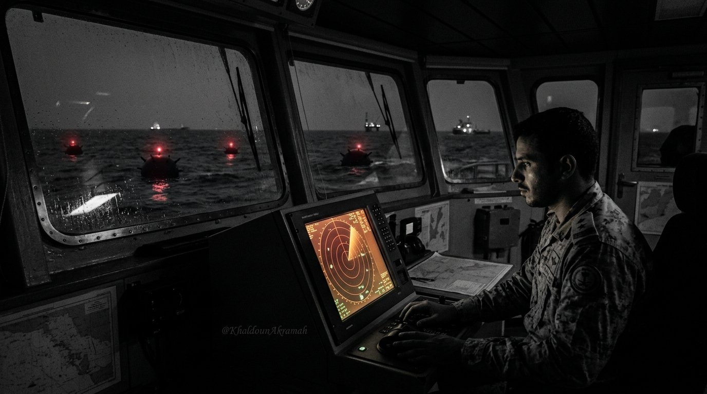

ساعة الصفر: التلغيم والاعتراض
كيف يُغلق المضيق عسكرياً وتقنياً؟
إغلاق هرمز لا يتطلب بناء جدار من السفن الغارقة؛ بل يكفي إعلان منطقة عمليات حربية، ونشر بضع مئات من الألغام البحرية اللاصقة والذكية على طول ممرات العبور، مصحوبة بتهديد صاروخي من السواحل المقابلة.
تمتلك الترسانات البحرية الإيرانية آلاف الألغام البحرية المتطورة من طراز EM-52 ذات التحفيز الصوتي والمغناطيسي، وزوارق هجومية سريعة قادرة على اعتراض الناقلات في دقائق معدودة. بمجرد إصابة ناقلة واحدة أو اعتراضها، تعلن نوادي الحماية والتعويض البحرية (P&I Clubs) تعليق تغطيتها التأمينية فوراً، مما يشل حركة أساطيل النقل التجاري حتى دون إطلاق صاروخ واحد إضافي.
"في البحرية الحديثة، لا تحتاج إلى تدمير مائة سفينة لإغلاق ممر مائي؛ يكفي أن تجعل التأمين على سفينة واحدة أمراً مستحيلاً تجارياً."
تقارير المعهد الدولي للدراسات الاستراتيجية (IISS)

تصور بصري توثيقي: محاكاة اعتراض مسارات الشحن الملاحية ونشر الألغام البحرية في مياه الخليج.